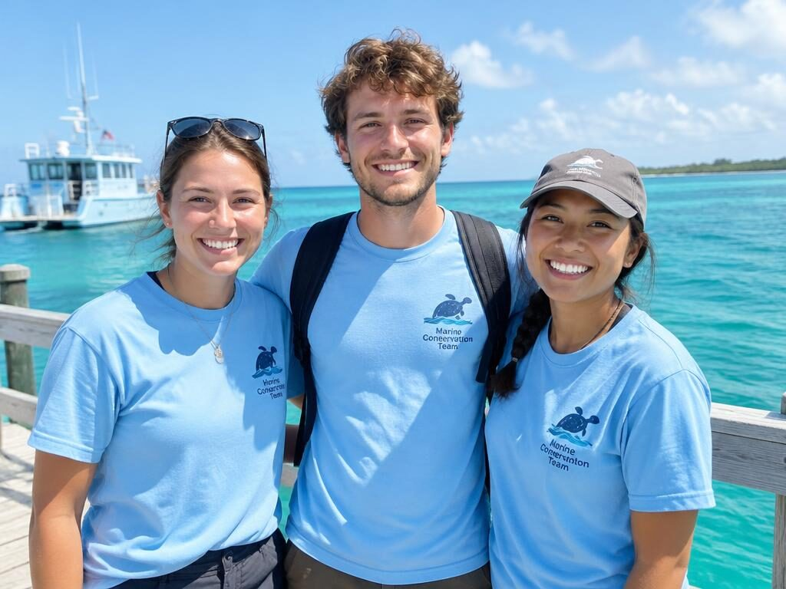
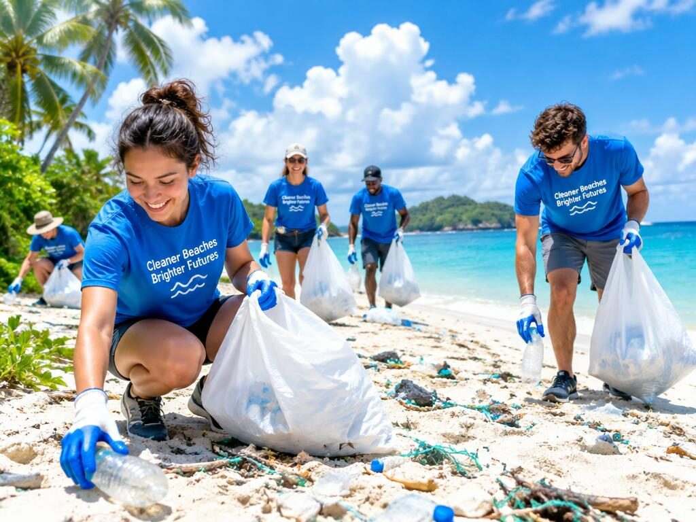
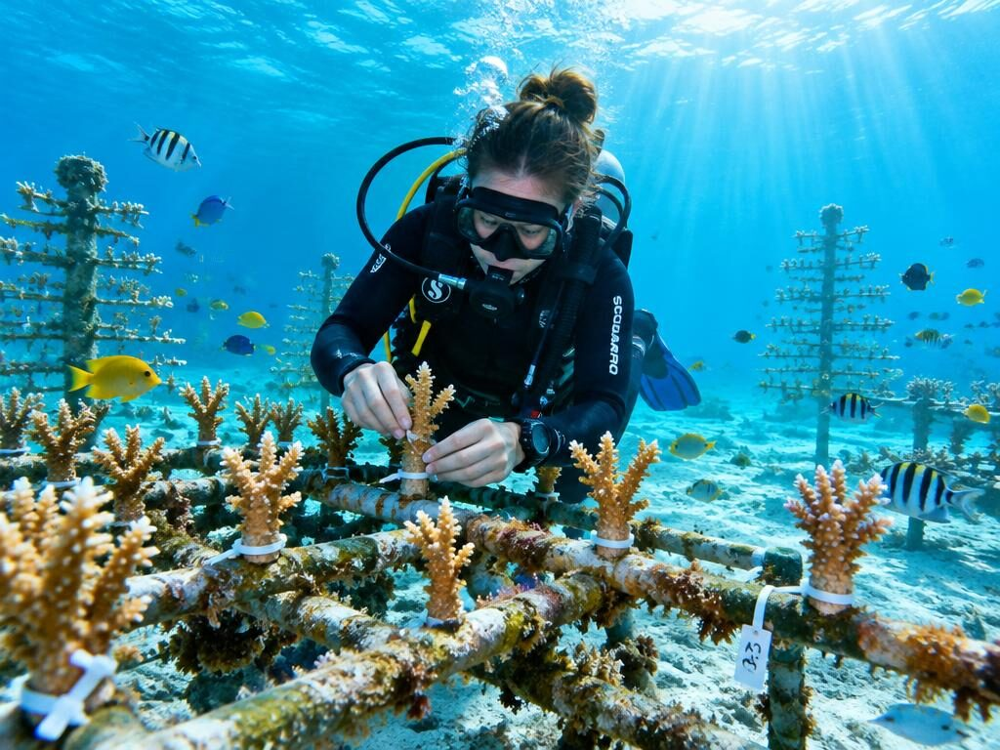
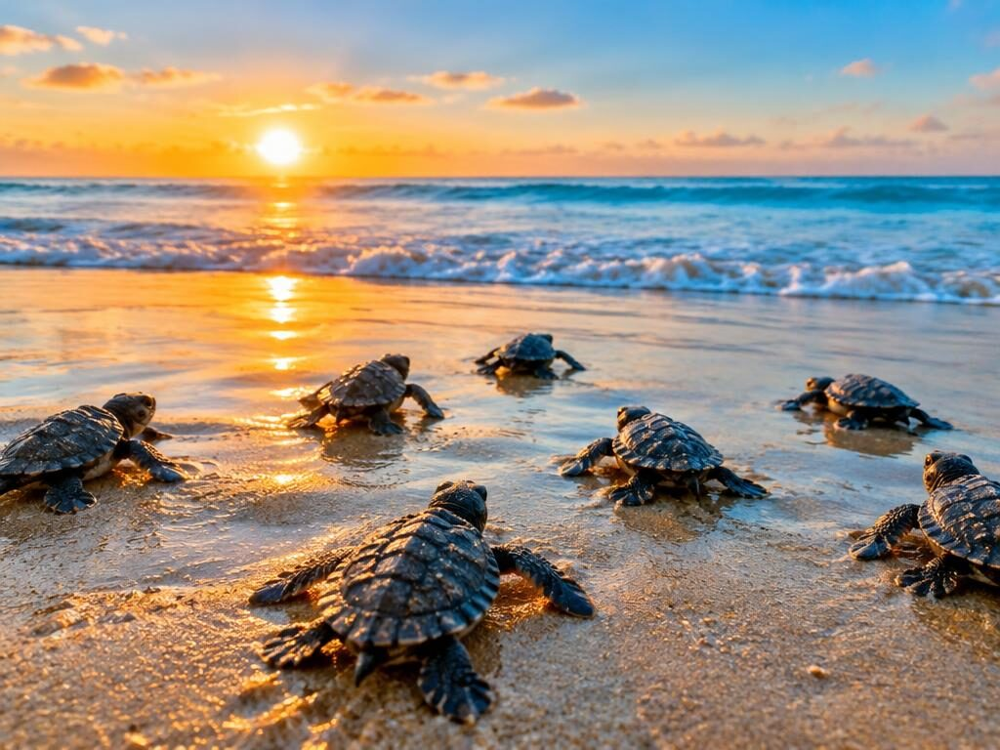
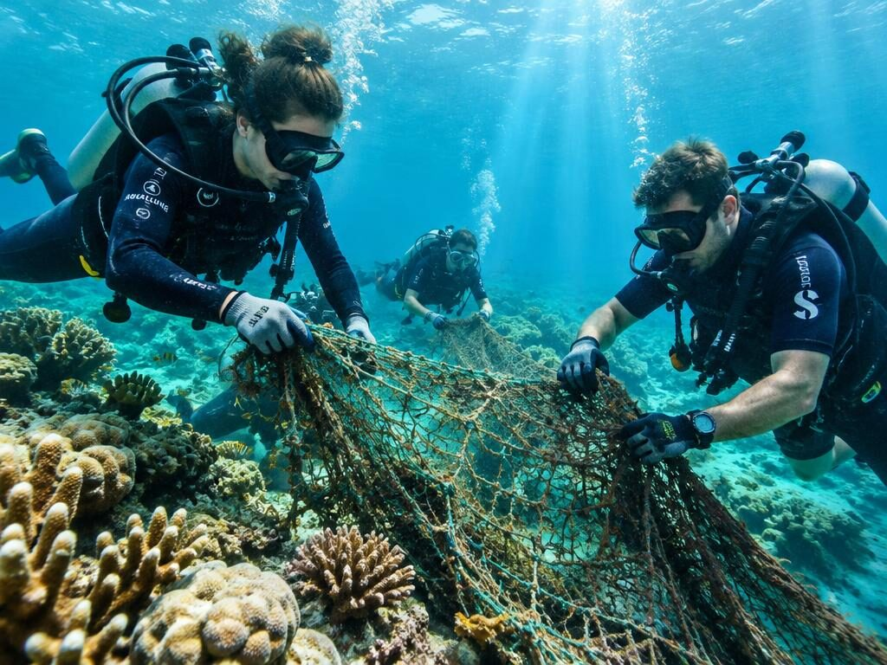
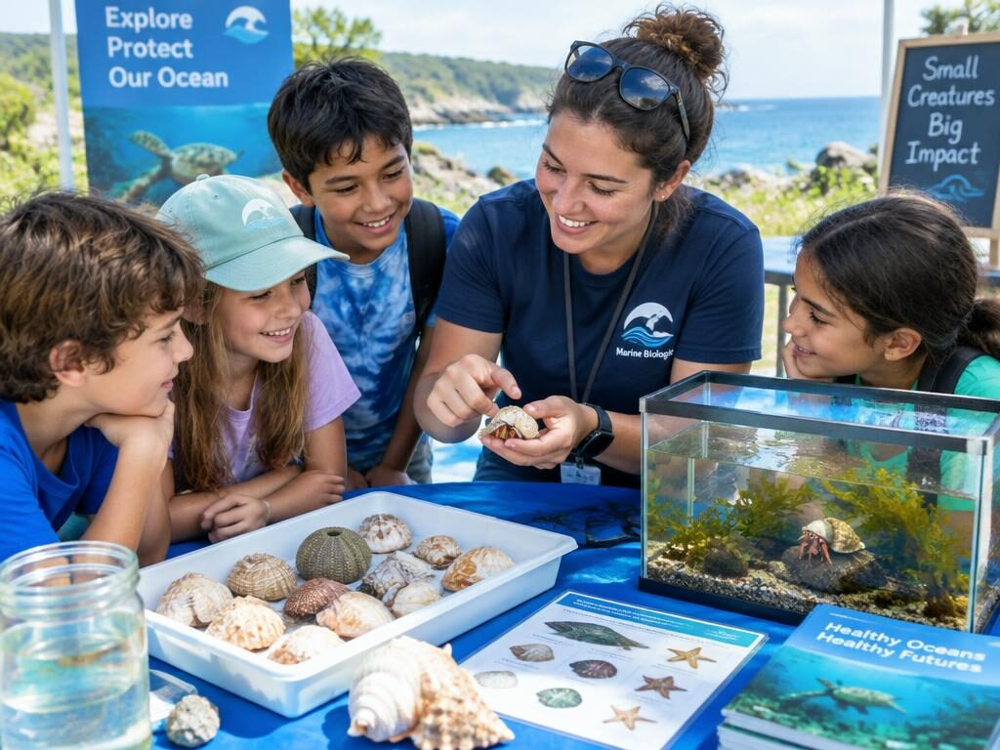

Cuidar do mar é cuidar da vida
A OceanGuard protege oceanos, praias e animais marinhos do litoral brasileiro.
Sobre Nós
Uma ONG criada em 2014 para cuidar dos oceanos
Nossa causa
Trabalhamos para proteger os oceanos através de limpeza de praias, restauração de recifes e educação ambiental.
Nossa equipe
- Ana Ribeiro - Bióloga marinha
- Lucas Moreira - Coordenador de mergulho
- Mei Tanaka - Educadora ambiental

Nossos Projetos
Trabalhos realizados pela ONG
Limpeza de praias
Mutirões mensais de limpeza com voluntários em diversas praias do litoral.

Restauração de corais
Cultivo e replantio de fragmentos de coral em recifes danificados.

Tartarugas marinhas
Monitoramento de ninhos e acompanhamento de filhotes até o mar.

Remoção de redes
Retirada de redes de pesca abandonadas que prendem animais marinhos.

Educação ambiental
Oficinas e palestras em escolas públicas sobre proteção dos oceanos.

Nosso Vídeo
Conheça mais sobre o trabalho da OceanGuard
Como Doar
Sua doação ajuda a manter nossos projetos funcionando. Qualquer valor faz diferença.
Doação mensal
Ajude mensalmente e mantenha os projetos ativos o ano todo.
Seja voluntário
Participe dos mutirões de limpeza e oficinas nas escolas.
Doe materiais
Aceitamos luvas, sacos, protetor solar e equipamentos de mergulho.
Contato
Entre em contato conosco
E-mail: contato@oceanguard.org
Telefone: (67) 67676-7676
Endereço: Av. Ballerina Cappuccina, 67 - Xique-Xique, BA
Enviar e-mail